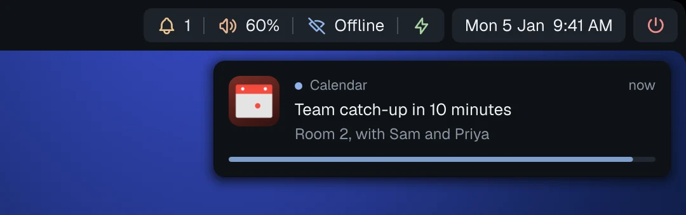
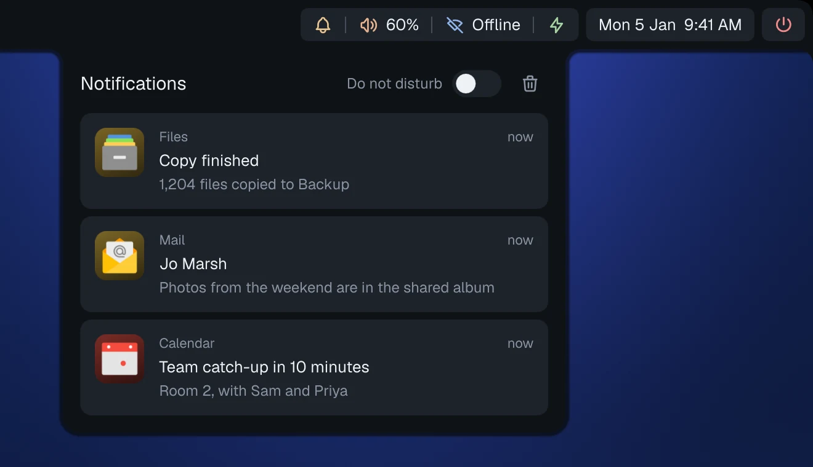

The desktop
Notifications and indicators
Slate shows your apps' notifications itself, keeps them so you can catch up later, and lets you quieten them when you need to focus. Small indicators show what changes as you press keys.
Pop-ups
When an app sends a notification, it pops up as a card with the app's icon and name, when it arrived, its title and its message. A picture, like a screenshot or album art, shows as a larger preview beneath. Pop-ups appear on your main display, clear of the menu bar and the dock.

- Click the card to do what the app suggests, usually opening it where the notification is about.
- Buttons on the card, when the app gives some, do just what they say.
- The close button in its corner puts it away.
A thin line along the bottom shows how long the card has left. It waits while the pointer is on it, so you can finish reading.
Where they go and how long they stay
In Settings → Notifications → Pop-ups:
| Setting | What it does |
|---|---|
| Position | Click a spot on the little screen: the top or bottom, at the left, center or right. Top right is the default. |
| Stay on screen for | From 2 to 15 seconds, for apps that don't choose their own time. |
| Most at once | How many pop-ups show together. When there are more, the oldest go first. |
Urgent notifications
Urgent ones have a red band across the top and stay until you close them. They still pop up during Do Not Disturb.
History
Every notification is kept, so nothing's lost if you miss a pop-up. Click the bell on the menu bar, or press Super + A, to see them all, newest first. The bell shows how many are new since you last looked. When you're all caught up, the panel says so. A new one that arrives while the panel is open slides in at the top (it just appears if you have animations off).

The bin button at the top of the panel clears the history, as does Settings → Notifications → History. Your history is kept on your computer, and it's still there after Slate restarts.
Apps on the dock show a badge with the notifications they've sent since you last went to them. See The dock.
Do Not Disturb
Do Not Disturb quietens pop-ups so you can focus. Urgent ones still show, and everything still goes to your history, so you can catch up when you're ready. Switch it on from:
- the switch at the top of the notifications panel,
- the control center's quick switch or its right-click menu,
- the launcher (type "dnd"),
- or Settings → Notifications.
In game mode, pop-ups are held back too, and wait in the history for you.
While your screen is locked, and for a few seconds after you log in or unlock, notifications wait quietly in the history too, so you don't come back to a burst of pop-ups and chimes. Any urgent ones that came meanwhile pop up as soon as that's over.
Quiet by itself
Under Quiet by itself in Settings → Notifications, Do Not Disturb can come on without you:
| Setting | What it does |
|---|---|
| On a schedule | On from From until Until (22:00 to 07:00 to start with), Every day, on Weekdays or on Weekends. A night counts as the day it began, so a weekday schedule covers early Saturday morning but not early Monday. |
| While a window is full screen | A film, a game or a presentation isn't interrupted. |
| During calls | While an app is using your microphone. |
When it's on by itself, the notifications panel and the bell's label say why ("until 07:00", "while you're on a call"). Switch it off by hand and notifications come through until that changes: the schedule ends, the window leaves full screen, or the call finishes. Next time, it comes on again as usual.
Still let through lists apps whose notifications pop up even while Do Not Disturb is on, by hand or by itself. Add an app offers the apps that have sent you notifications. Urgent notifications always get through.
Sounds
A soft chime plays when a notification pops up. A burst of them chimes just once, low-priority notices and apps that ask for quiet stay silent, and urgent ones play Slate's attention sound instead. Set the chime's volume, or turn it off at 0, with Sound in Settings → Notifications or on the Sound page.
On-screen indicators
A small pill near the bottom of the screen shows what you've just changed, then fades away after a moment.
- Volume and microphone, whenever they change, from the keys, an app or the bar. Volume keys play a soft tick at the new level.
- Screen brightness and keyboard backlight, from their keys.
- Workspaces: when you move to the next or previous one (Super + ← →), a larger copy of the bar's workspace dots shows the marker gliding across. With Name when switching on (in Settings → Workspaces), the name of the workspace you land on shows beneath.
- The camera: "Camera on", with the name of the app using it, the moment one starts, and "Camera off" when it's let go. So you always know when you're on camera.
While the volume panel is open, its own slider shows the change instead.
How they look
With glass on (Appearance), notifications have their own Blur, Opacity and Hover opacity (how solid a card turns while the pointer is on it, to read it by), in Settings → Notifications → Glass.